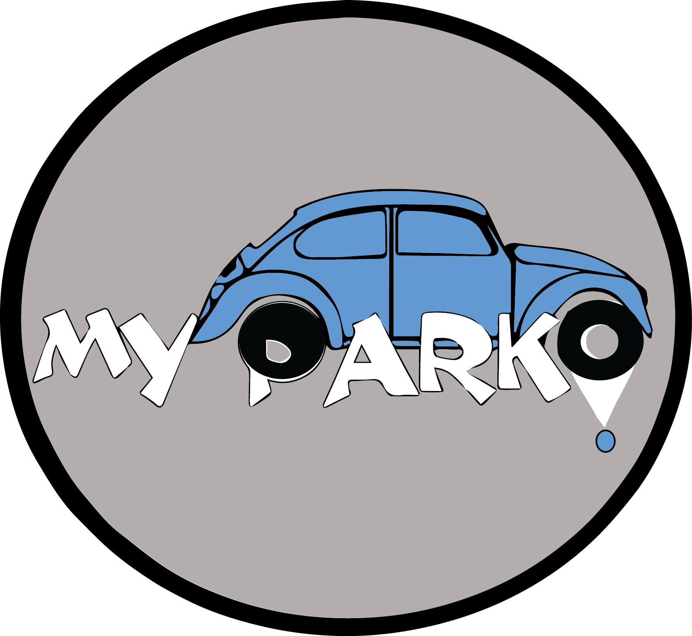

<ion-menu [content]="content" >
        <ion-content padding id="menu" style="background-image: url('http://images8.alphacoders.com/366/thumb-1920-366762.jpg');background-repeat:no-repeat;background-size:cover;background-position:center;">


                        
                    <br><br>
                <button ion-item menuClose  (click)="openPage1()" style="background-color: transparent; color: white">
                  <ion-icon name="settings" style="color: dodgerblue;" item-start></ion-icon>
                    <p style="color: #fff; font-family:'Tempus Sans ITC'; font-weight: bold;">  Profile</p>
                </button>
                <button ion-item menuClose (click)="openPage2()" style="background-color: transparent; color: white">
                  <ion-icon name="call" style="color: dodgerblue;" item-start></ion-icon>
                    <p style="color: #fff; font-family:'Tempus Sans ITC';font-weight: bold;"> Contact</p>
                </button>
                <button ion-item menuClose (click)="openPage3()" style="background-color: transparent; color: white">
                <ion-icon name="hand" style="color: dodgerblue;" item-start></ion-icon>
                    <p style="color: #fff; font-family:'Tempus Sans ITC'; font-weight: bold;"> Disponibilité</p>
                </button>
                <button ion-item menuClose (click)="openPage4()"style="background-color: transparent; color: white">
                <ion-icon name="power" style="color: dodgerblue;" item-start></ion-icon>
                    <p style="color: #fff; font-family:'Tempus Sans ITC'; font-weight: bold;"> Déconnxion</p>
                </button>


        </ion-content>
      </ion-menu>
       
      <!-- main navigation -->
      <ion-nav [root]="rootPage" #content ></ion-nav>